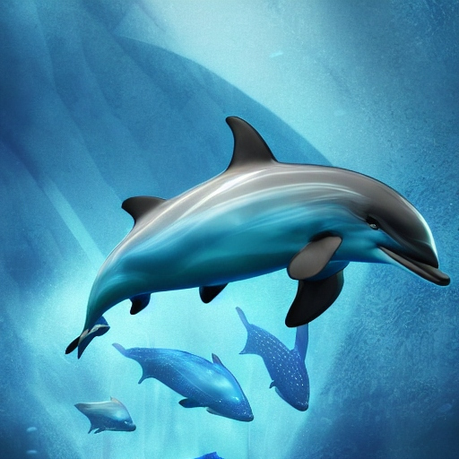

Description: The Sapphire Swimmer is a sleek, dolphin-like creature with iridescent blue scales and long, graceful fins. It possesses bioluminescent patterns along its body that glow in the dark depths of Aquaria's oceans.They are highly intelligent and social, Sapphire Swimmers travel in pods, communicating through a complex system of clicks and whistles. They are known for their playful nature, often engaging in acrobatic displays. They inhabit the expansive oceanic depths of Aquaria, where they can be found swimming in the vicinity of coral reefs and underwater caverns. They are carnivorous, feeding on small fish, squid, and crustaceans. Despite their agility and speed, Sapphire Swimmers are occasionally targeted by larger predators such as the Leviathan Serpent. They can live for up to 50 standard Aquarian years.
Planet: Aquaria